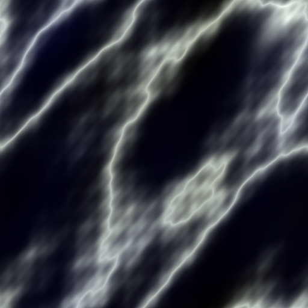
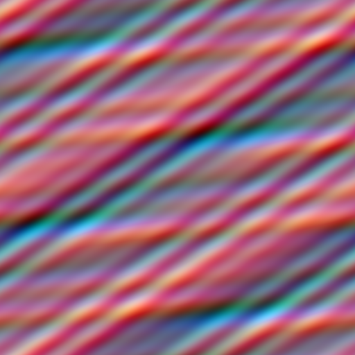
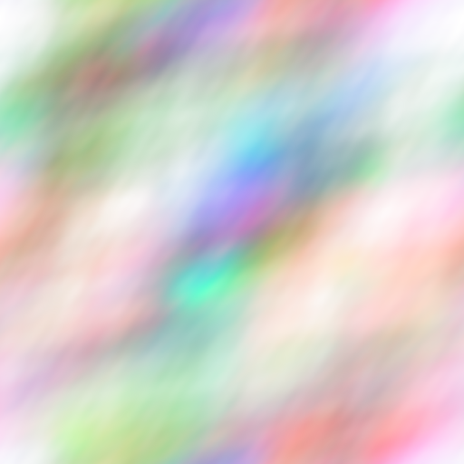
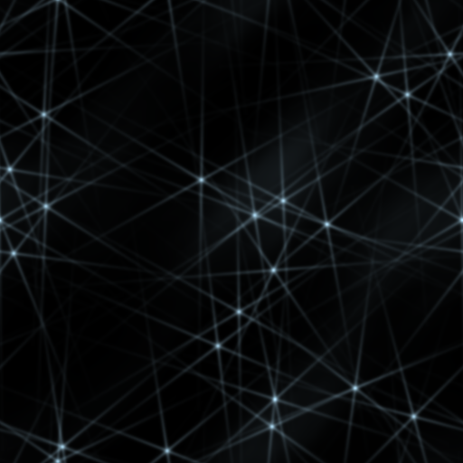
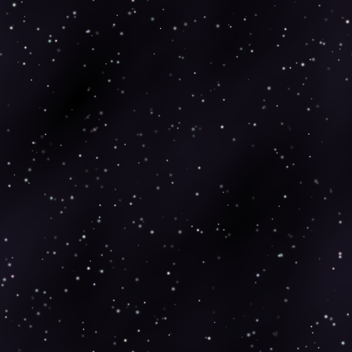
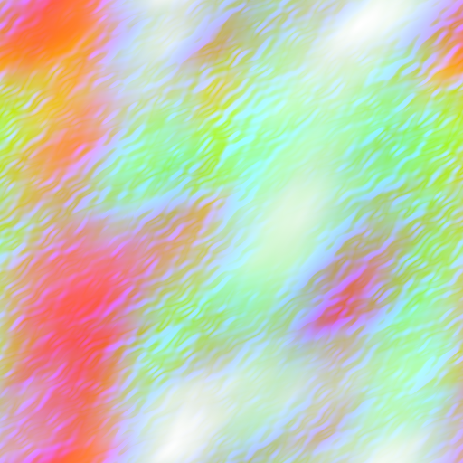

Validation gallery
Frames produced and verified by the skills themselves — fixed-view design contracts, per-signal diagnostics mosaics, and deterministic generated texture assets. Click through to the owning skill.








TSL-first · WebGPURenderer · Screenshot-backed validation
Not a tutorial. A skill pack for agents — Claude Code, Codex, and any shell that loads local skill folders — that need to design, implement, debug, and prove advanced real-time graphics: oceans, atmospheres, planets, volumetric clouds, water optics, particles, shadows, and full node post pipelines.
Install the complete pack with npx skills@latest add linegel/threejs-complete-set-of-skill --skill '*', or clone the repo where your agent can see it and invoke skills by name. Broad scene requests should use the in-pack router after the pack is installed; each skill carries its own references, agents, and runnable examples.
List available skills first, then install the whole pack as one coherent graphics toolkit.
npx skills@latest add linegel/threejs-complete-set-of-skill --list
npx skills@latest add linegel/threejs-complete-set-of-skill --skill '*'Start broad requests with the router so only the relevant experts are loaded into context.
Use $threejs-choose-skills to plan a WebGPU/TSL
scene with an ocean at sunset, volumetric clouds,
camera flythrough, bloom, and validation.Load the selected skills, build the visual cause first, then prove the frame with reproducible evidence.
Use $threejs-spectral-ocean and
$threejs-sky-atmosphere-and-haze, then
$threejs-visual-validation to verify the frame.Every skill is a plain folder — SKILL.md with YAML frontmatter, references/, agents/, and runnable examples/ — so skills CLI, skills.sh, and any agent that reads local files can use the pack. Machine-readable index: skills.json · plain-text overview for LLMs: llms.txt.
Use the open skills installer to list the pack, then install every top-level threejs-* skill folder as one coherent graphics skill pack for your selected agent.
npx skills@latest add linegel/threejs-complete-set-of-skill --list
npx skills@latest add linegel/threejs-complete-set-of-skill --skill '*'Install through skills CLI, or symlink/copy the skill folders into a personal or project skills directory.
npx skills@latest add linegel/threejs-complete-set-of-skill --skill '*' -a claude-code -g -y
# manual fallback:
git clone https://github.com/linegel/threejs-complete-set-of-skill.git
ln -s "$PWD/threejs-complete-set-of-skill"/threejs-* ~/.claude/skills/Install the whole pack through skills CLI when available. For local checkouts, keep AGENTS.md pointed at the repo-local threejs-*/SKILL.md files as the authoritative source.
npx skills@latest add linegel/threejs-complete-set-of-skill --skill '*' -a codex -g -y
# local checkout fallback: read ./threejs-*/SKILL.md when a task matchesAny harness that can read local files works: each skill is a self-contained folder with SKILL.md, references/, agents/, and examples/. The machine-readable index lives at skills.json; a plain-text overview at llms.txt.
git submodule add https://github.com/linegel/threejs-complete-set-of-skill.git skills/threejs
curl -s https://linegel.github.io/threejs-complete-set-of-skill/skills.json | jq '.install.source, .skills[].name'
curl -s https://linegel.github.io/threejs-complete-set-of-skill/llms.txtOne owner for depth, tone mapping, and output color. Build the visual cause first; use post to preserve it. Validate with evidence, not one attractive screenshot. Every card opens a dedicated page with the approach, math, gallery, and full skill text.
Route requests to the right experts and prove the result with reproducible evidence.
Choose the smallest expert skill set for ambitious Three.js WebGPU/TSL visual work and diagnose version-specific Three.js/WebGPU API or renderer failures. Use for WebGPURenderer scenes, TSL/NodeMaterial graphics rewrites, node post pipelines, compute/storage systems, reference matching, known-issue debugging, upgrade triage, or requests spanning geometry, materials, atmosphere, shadows, temporal effects, and final image treatment.
02Validate advanced Three.js WebGPU/TSL graphics as authored systems using fixed-view visual contracts, node-pipeline diagnostics, no-post baselines, seed and temporal sweeps, renderer.info and GPU timing evidence, capability manifests, leak loops, and stable JSON+PNG regression bundles.
03Teach how to apply fallback for Three.js WebGPU work only when the user explicitly asks how to apply fallback when WebGPU is unavailable. Do not use for flagship WebGPU/TSL implementations, automatic routing, or unrelated target-support/tuning work.
Who owns depth, tone mapping, and the last pass — the difference between a demo and an image.
Build advanced Three.js WebGPU/TSL camera controls and rigs. Use for scale-aware chase rigs, thrust lag, side/orbit cameras, body-relative up vectors, quaternion handoffs, authored cinematic framing, floating origins with storage-buffer world offsets, pointer-look controls, camera collision constraints, projection/depth ownership, node post-pipeline integration, and lifecycle restoration.
05Implement scalable real-time WebGPU/TSL shadow systems for Three.js. Use for dynamic scenes, bounded lights, cascades, tiled projections, streaming open worlds, cached clipmaps, ShadowNode hooks, texel stabilization, update budgets, targeted invalidation, and node-material caster parity.
06Implement production ambient contact shading and ambient occlusion in latest Three.js with WebGPURenderer, TSL, RenderPipeline, GTAONode, TRAANode integration, half-resolution node passes, bilateral reconstruction, and optional custom bent-normal extensions.
07Implement production bloom in advanced Three.js WebGPU/TSL scenes. Use for RenderPipeline HDR signal ordering, MRT emissive-output selective bloom, BloomNode controls, scene-relative emissive hierarchy, resolution-scale budgets, and effect-isolation diagnostics.
08Build a maximum-performance WebGPU/TSL exposure and grading path in Three.js. Use for compute-reduced luminance metering, storage-buffer exposure state, shader-side asymmetric adaptation, single tone-map/output ownership, and post-tone-map lut3D color grading.
09Build a maximum-performance WebGPU/TSL final-image pipeline for advanced Three.js scenes. Use for RenderPipeline ownership; pass()/mrt() depth, normal, albedo, emissive, velocity, and history signals; GTAONode, BloomNode, TRAANode, exposure, tone mapping, 3D LUT grading, outputColorTransform, and pass diagnostics.
Skies, oceans, weather, and water that share causes instead of fighting each other.
Implement maximum-performance sky, atmosphere, and haze systems in latest Three.js with WebGPURenderer, TSL, NodeMaterial, RenderPipeline, compute-generated scattering LUTs, depth-aware aerial perspective, sun/moon discs, and atmosphere-aware lighting.
11Implement maximum-performance volumetric cloud systems in latest Three.js with WebGPURenderer, TSL, NodeMaterial, node RenderPipeline passes, compute/storage textures, temporal reprojection, cloud shadows, and scalable quality tiers.
12Build large procedural oceans in latest Three.js with WebGPURenderer, TSL compute FFT cascades, StorageTexture ping-pongs, NodeMaterial shading, node post pipelines, multi-cascade wavelength bands, clear-water optics, above/below surface rendering, spectral derivatives, Jacobian whitecaps, temporal foam, analytic sky reflection, underwater absorption, crest scatter, and GPU validation.
13Build production WebGPU/TSL analytic and bounded water in Three.js. Use for compute StorageTexture heightfield simulation, TSL shared multi-wave displacement and normals, local drops, object ripples, differential-area caustics, depth-aware node refraction, NodeMaterial water optics, Beer-Lambert absorption, side-aware Fresnel, derivative-filtered normal bands, analytic sky reflection, and crest foam.
14Build coupled WebGPU/TSL rain, snow, and wet-surface systems in Three.js. Use for compute-driven falling snow, rain streaks, snow accumulation, model snow caps, wet asphalt puddles, procedural or generated ripple normals, splash flipbooks, shared weather envelopes, and surface wetness or coverage transitions.
Fields, materials, geometry, buildings, planets, vegetation, creatures — authored systems, not noise soup.
Build coherent WebGPU/TSL procedural scalar and vector fields for Three.js NodeMaterials, compute bakes, storage textures, terrain, planets, wear, biomes, clouds, water masks, displacement, roughness, normals, domain warping, and visuals where many channels derive from shared causes.
16Author production WebGPU/TSL procedural materials in Three.js. Use for NodeMaterial PBR identity fields, atlas and triplanar filtering, specular AA, planet-space material fields, terrain wetness, lava and hot emissive procedural surfaces, raymarched material fields, per-instance dissolve, derivative normals, and authored physical response bundles.
17Build production procedural mesh systems in latest Three.js WebGPU/TSL. Use for sculpted rail and frame profiles, oriented branch rings, semantic indexed BufferGeometry writers, explicit material slots, BatchedMesh versus InstancedMesh decisions, typed-array update paths, NodeMaterial surfaces, and close-inspection geometry budgets.
18Build authored procedural buildings, facades, and city kits in latest Three.js WebGPU/TSL. Use for massing grammars, exposed-edge analysis, facade bays, profiles, arches, cornices, roofs, ornaments, material-slot BatchedMesh or merged BufferGeometry compilation, deterministic variants, NodeMaterial identities, and procedural city assets.
19Author high-performance procedural planetary bodies in latest Three.js with WebGPURenderer, TSL, NodeMaterial, cube-sphere quadtree LOD, GPU displacement, coupled crater/biome/climate fields, analytic normals, altitude LOD, and atmosphere handoff from orbit through close approach.
20Generate authored procedural trees, grass, and vegetation in latest Three.js with WebGPURenderer, TSL, NodeMaterial, compute storage buffers, rooted wind, chunked LOD, species presets, trunks, branches, roots, canopies, leaf cards, trellises, and deterministic vegetation diagnostics.
21Build high-quality procedural and generated creatures in Three.js WebGPU/TSL. Use for spec-driven creature bodies, skeleton/control rigs, SDF blend-shell or generated/hybrid skins, procedural gait/hop/flight/swim locomotion, foot planting and 2-bone IK, verlet tails and ears, squash-and-stretch, toon fauna and NPCs, creature crowds, deterministic creature labs, and genetic creature variation. Not for imported glTF skinned-clip pipelines.
Kinematics, particles, surface history, and spacetime — motion with frame-rate-independent discipline.
Build high-performance procedural motion systems in Three.js WebGPU/TSL. Use for launch kinematics, gravity turns, staging, spin docking, target-frame decomposition, spring-follow motion, rotating-frame alignment, peeling debris, analytic transform timelines, frame-rate-independent response, storage/instanced animation, and quaternion control.
23Author production WebGPU/TSL particles, trails, and real-time effects in Three.js. Use for ship-conforming reentry plasma, generated capsule wakes, compute-updated instanced sparks, timed dissolving debris, dense-swap effect pools, and MRT-driven scene-relative HDR emission hierarchy.
24Build dynamic screen-space surface effects in latest Three.js WebGPU/TSL. Use for StorageTexture touch-history ping-pong, dt-correct frost/thaw masks, reduced-resolution node blur, static crystalline structure targets, and two-scale TSL normal refraction.
25Build WebGPU/TSL black holes, wormholes, accretion disks, and curved-ray space effects in Three.js. Use for black-hole lensing, accretion disks, wormholes, curved-ray integration, procedural star fields, relativistic-looking distortion, bounded volumetric structures, and GPU effects that need controlled numerical integration.
Frames produced and verified by the skills themselves — fixed-view design contracts, per-signal diagnostics mosaics, and deterministic generated texture assets. Click through to the owning skill.
GitHub Pages demos that initialize WebGPU in the browser. They are integration probes and reduced-tier provider surfaces, not substitute production engines.